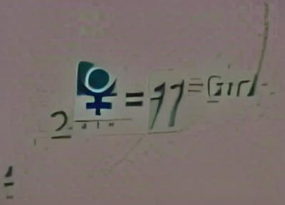
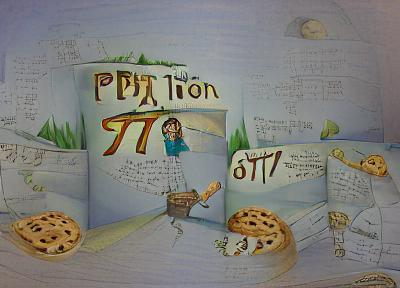
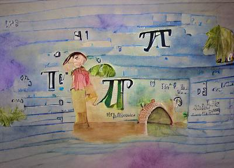
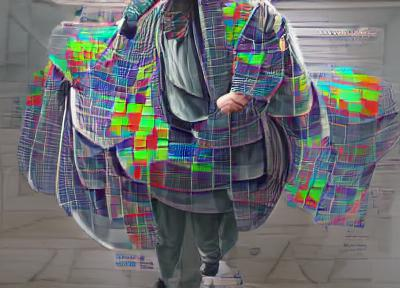
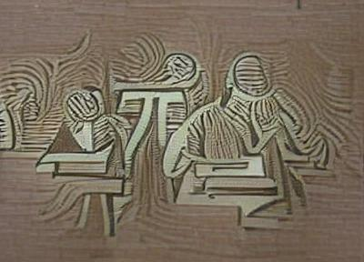
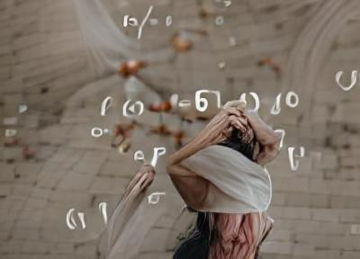
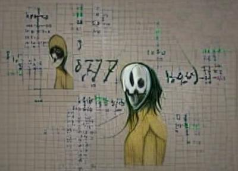
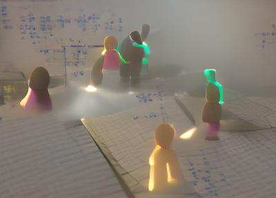

We use AI to pair phrases and images. Then given a random string, we look for the closest image encoded near the string. (We actually modify an image to make it as close as possible to the string).
Here, I put strings related to "pi" or "mathematician" and "math people". So the images were created by an artificial intelligence (VQGAN+CLIP using code by Johnowhitaker_Art).

Key phrase: "math genderless"

Key phrase: "math pi storybook illustration"

Key phrase: "math pi storybook illustration watercolor"

Key phrase: "mathematician data mosh"

Key phrase: "math people wood cut"

Key phrase: "mathematician unsplash contest winner"

Key phrase: "math people creepy pasta"

Key phrase: "math people volumetric lighting"Key phrase: "sunrays shine upon the number pi"
Happy pi day!